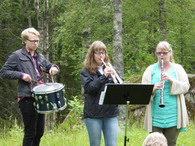

{kind=link}
{kind=link}
{kind=link}
{kind=link}
{kind=link}
{kind=link}
{kind=link}
{kind=link}
{kind=link}
{kind=link}
{kind=link}
{kind=link}
{kind=link}
{kind=link}
{kind=link}
{kind=link}
{kind=link}
{kind=link}
{kind=link}
{kind=link}
{kind=link}
{kind=link}
{kind=link}
{kind=link}
{kind=link}
{kind=link}
{kind=link}
{kind=link}
{kind=link}
{kind=link}
{kind=link}
{kind=link}
{kind=link}
{kind=link}
{kind=link}
{kind=link}
{kind=link}
{kind=link}
{kind=link}
{kind=link}
{kind=link}
{kind=link}
{kind=link}

Fortets Dag 2024
Program:
10.00 börjar verksamheten med korum
11.00 förevisar åmåls Karoliner musköt- och kanonexercis
Kenneth Larsson berättar om den tyska nödlandningen i Blomskog
Guidade visningar av skansen under dagen
Tipspromenad
Kaffeservering
14.00 avslutas Fortets Dag
Välkomna!Ar
Sidan uppdaterad 2024-06-17 V
2021 års Fortets Dag blir tyvärr inställt.
Sidan uppdaterad 2021-05-26. V
Vid årsmötet den 27 april i Skäggebyns Bygdegård var 14 medlemmar närvarande. Ordföranden kunde meddela att köpet av skansen nu är avslutat och föreningen har lagfart på marken.
Samtliga ledamöter i den avgående styrelsen omvaldes för verksamhetsåret 2019.
Fortets Dag 2019 kommer att genomföras Söndagen den 30 juni. Detaljerat program är under utarbetande.
Mötet avslutades med att Christian Nilsson berättade om sin mission i Afganistan.
Fortets Dag 2016...
...genomfördes söndagen den 3 juli. Genom skickliga fredsförhandlingar blev det denna gång ingen strid vid skansen. Aktiviteterna inleddes traditionsenligt med en friluftsgudstjänst, som denna gång, på grund av det envisade regnandet, hade flyttats in i ett tält. En utställning av gamla foton samlade många besökare, som även fick ta del av Kenneth Larssons förevisning av gamla uniformer och annnan militär utrustning. En berättelse om hur det gick till när Kompani Nordanskog mobiliserade och tågade mot gränsen som ett av de första svenska förbanden avslutade aktiviteterna.
Fortets Dag 2015...
...blev ju tyvärr av olika anledningar inställt. Dock genomfördes den friluftsgudstjänst som brukar inleda Fortets Dag och denna gång kunde den genomföras utan att regnkläderna kom till användning.
|  | |||
| Fälgudstjänst med PV-garaget i förgrunden | Livemusik till gudstjänsten | Willy Hjalmarsson ledde gudsjänsten | Besök från Norge anländer |
| Medlemmar ur Historisk Militäre Kjöretöyers Foerning urlastar | Korvgrillning och "kyrkkaffe". Weine Johansson informerade om skansens tillblivelse | En guidad rundvandring avslutade dagen |
Kulturarvsdagen 2014
På kulturarvsdagen, som i år anordnades med mottot "I krigens spår", var det öppet hus på Sjöänd Skans.
Trots det vackra vädret och kanske på grund av att det var valsöndag, var det ingen stor publiktillströmning. Dock fick vi besök av ett antal medlemmar från Historisk Militäre Kjöretöyers Forening från Norge, som i 4 äldre militärfordon anlände till skansen och där blev guidade runt av bl a Weine Johansson.
| Weine Johansson informerar om skansen | Rundvandring i värngångarna | Ett av de norska fordonen med gästerna |
Bilder från Fortets dag 2014
| Tössbo Karoliner rullar in sin 3-pundiga kanon.. |
Här
möts gammalt och nytt
|
Karolinerna Göran Karlsson samtalar med Björn Wiklund |
Deltagarna marscherar in... | ....för avlämning till "Major" Andersson | |
| Delktagarna från Skepplanda lämnar av |
Fältgudstjänst
under ledning av komminister Malin Henriksson
|
Talrik publik vid gudstjänsten | Komminister Malin Henriksson | Förtroligt samtal | |
| Utmarsch efter gudstjänsten, först Skepplanda Hemvärns- och Hembygdsförening.... |
....följd
av Tlössbo Karoliner
|
Kanske en aspirant till Tössbo Karoliner |
Hungriga besökare vid kokvagnen | återväxten tryggad? | |
| Dags för kanonexcercis. Fängkrutet brinner |
Fyr!!!
|
Dags för musköterna. Ladda! | Det tog ett tag att ladda enligt kommando | Publiken väntar spännt på smällen | |
| Där small det!! |
Nu
har anfallet mot skansen börjat. Ett kulsprutegevär m/37 ingår
i försvararnas arsenal
|
Hur skall det gå? |
De flesta försvararna var beväpnade med Mauser m/96 | Det small rejält när anfallarnas "granater" slog ner | |
| Björn Wiklund diskuterar Fortets Dag med en av besökarna |
Intresserad
åskådare
|
Foto: åke Ericsson och Finn Hjelmström
Fortets Dag på Sjöänd Skans i Glaskogen har nu blivit en årligen återkommande tradition när den i söndags firades för sjunde gången.
Komminister Malin Henriksson inledde tillställningen med en fältgudstjänst
som hade samlat många deltagare. De deltagande aktörerna utgjorde
en festlig inramning under ceremonin.
De mer än 200 besökarna kunder därefter vandra runt bland bunkrar
och skyddsrum, antingen enskilt eller i grupp, guidade av sakkunniga medlemmar
i Fort 118, den förening som äger och håller minnet av beredskapstiden
levande. Man blev också upplysta om att just år 2014 är späckat
med jubileer, både positiva och negativa, från orostiden.
Det är nu 200 år sedan den siste svenske soldaten stupade i ett svenskt
krig. I samband med kriget mot Norge vid slaget vid Kjölbergsbro vid Glomma
stupade Berndt Storm från Bohusläns Regemente som den siste svenska
soldaten. Dagen innan Fortets Dag var det 100 år sedan Gavrilo Princip
avlossade de olyckliga skotten i Sarajevo, vilka utlöste det första
världskriget.
Ett annat mörkt årtal i historien skrevs för 75 år sedan;
1939 började andra världskriget. Nästa år kan vi dock fira
ett positivt jubileum, 70 år efter att andra världskriget tog slut.
Det var sedan dags för en bejublad uppvisning av Tössbo Karoliner.
Iförda blå-gula uniformer och under reglementsenliga kommandon laddades
först deras 3-pundiga kanon, vilken sedan avlossades av "överste"
Thomas Henriksson. 6 musketerare under befäl av "korpral" Göran
Pettersson laddade därefter sina vapen vilka avlossades i en öronbedövande
salva.
Publiken kunde även titta på en intressant utställning av gamla
vapen och övrig utrustning, medan man åt ärtsoppa, tillagad
i en kokvagn från beredskapstiden.
Skepplanda Hemvärns- och Kulturförening har varit en återkommande
gäst vid Fortets Dag och även i år stod de för försvaret
av skansen, då krigsspelet Skansen i Strid genomfördes. Iförda
uniformer från beredskapstiden och med tidsenliga vapen försvarade
de framgångsrikt skansen mot en "fiende" som med understöd
av granatkastare försökte erövra skansen.
Skansen är öppen för besök under hela året. I samband
med Kulturarvsdagen den 14 september kommer det att anordnas guidade visningar
på skansen.
Köp
Föreningens övertagande av skansen är nu avklarad och avstyckningen är klar. Vi kan nu påbörja arbetena på skansen på allvar
Fortets Dag 2013
Nästan 400 besökare kom till skansen i samband med fortets dag den 30 juni. Arrangemanget inleddes med att skansens försvarare, bestående av medlemmar ur Skepplanda Kultur- och Hemvärnsförening och "fienden", som bestod av medlemmar ur Värmlands Hemvärn, tågade in. Därefter förrättade Kyrkoherde Mikael Jonsson en fältgudstjänst. Man hade tillfälle att äta ärtsoppa ur en tidsenlig kokvagn och beskåda utställningar av gamla uniformer och annan militär utrustning. Som höjdpunkt på arrangemanget fick man uppleva hur skansens försvarare klarade av ett anfall av störtbombare.
Celebert besök på skansen
Ett 40-tal medlemmar i Föreningen Värmländsk Kultur och Föreningena Värmlandslitteratur besökte i slutet av maj bl a Sjöänd Skans och guidades där av Björn Wiklund och Finn Hjelmström
| Björn Wiklund informerar om skansen | Rundvandring i värngångarna |
Årsmötet hölls den 14 april på Hemvärnsgården i årjäng med 13 medlemmar närvarande. Den stora frågan var köpet av marken där skansen ligger. Ett enigt årsmöte sade JA till styrelsen förslag om köp.
Kjell Olsson och Björn Wiklund underteckna köpekontraktet
Efter mötet berättade Finn Hjelmström om Bertil Harding, alias Fritiof, en svensk gerillaledare, som opererade på norska sidan av gränsen i höjd med Töcksfors. Ett par artiklar om denne märkliga äventyrare finns i tidskriften Värmländsk Kultur, som i sitt Nummer 2 har Beredskapstiden som tema. Där presenteras även Sjöänd Skans i en artikel, skriven av Björn Wiklund.
Julbord
Ett 25-tal medlemmar och damer samlades den 16 december på Hemvärnsgården i årjäng för att äta det delikata julbordet som några av föreningens medlemmar ställt i ordning. Därefter drack man kaffe och lyssnade på ett föredrag om Hemvärnets utveckling sedan starten 1940.
Bilderna är klickbara
Trots att det tidvis ösregnade, hade dock omkring 200 personer letat sig fram till Sjöänd Skans för att delta i arrangemangen, som i år inleddes med en friluftsgudstjänst, ledd av Kyrkoherde Mikael Jonsson.
även i år gästades Fortets Dag av våra vänner från Gästrike Militärhistoriska Förening, som denna gång hade att försvara skansen mot ett pansaranfall västerifrån. Till sin hjälp hade man en 37 mm pansarvärnskanon av den typ som skansen var utrustad med under andra världskriget. Som "fiende" agerade personal ur Värmlands Hemvärn, som denna gång var fåtalig, eftersom man fram till efter midnatt hade varit engagerade i ett eftersök i Grums.
Det var på dagen 69 år sedan Sverige kunde ha blivit invaderat av Tyskland och krigsspelet hade kopplingar till detta tänkbara scenario. Hitler hade beordrat chefen för tyska krigsmakten, Alfred Jodl, att planera en blixtinvation av Sverige. Denna skulle genomföras med hjälp av bl a 25. pansardivisionen under befäl av General Adolf von Schell och omfattade ca 20.000 man och skulle ske med huvudriktning längs Dalälven i riktning mot Västerås och vidare mot Stockholm. Samtidigt skulle fallskärmstrupp ta Karlstad, medan Sunne och Kil skulle bombas. Flygfältet på Frösön skulle besättas och Sverige skulle "kapas av på mitten" genom ettt samordnat anfall från Trondhjem och Finland, där det fanns tysk trupp.
Anfallet skulle igångsättas den 1 juli kl 0300. Den 30 juni beordrade dock Hitler att det skulle inställas, då 25. pansardivisonen bättre kom att behövas på Västfronten. Den kom senare att förflyttas till östfronten, där den i stort sett förintades.
I perfekt väder genomfördes Fortets Dag 2011 på Sjöänd Skans den 3 juli
årjängs kommunalråd Katarina Johannesson invigningstalade när den fjärde upplagan av Fortets Dag på Sjöänd Skans gick av stapeln den 3 juli.
Mellan 200 och 300 åskådare hade samlats för att titta på en vapenutställning och sedan se på krigsspelet "Skansen i strid" som genomfördes av ett 20 tal entusiaster från Skepplanda Hemvärns- och Kulturförening och Gästrike Militärhistoriska Förening.
De som kom fick dock lyssna till överstelöjtnant Sven-åke Modins intressanta invigningstal, där han redogjorde för skansens betydelse i samband med Tysklands ockupation av Norge och ett eventuellt anfall mot Sverige. Han konstaterade då att skansen förmodligen hade varit en svår nöt för tyskarna att knäcka. Han menade också att Sveriges dåvarande statsminister Per-Albin Hansson misshandlade sanningen, då han lät förkunna att "Sveriges beredskap år god". Inte alla förband som skickades mot gränsen strax efter den 9 april 1940 hade tillgång till skarp ammunition den första tiden.

{kind=link}